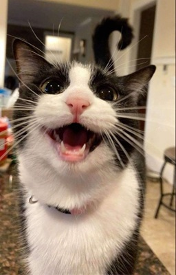
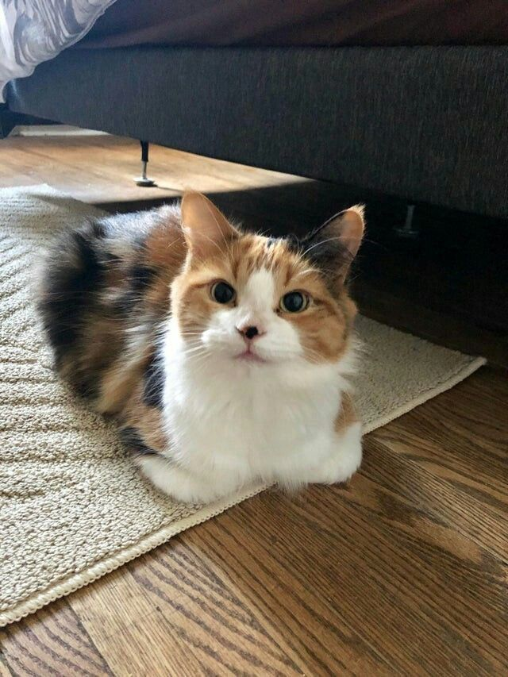
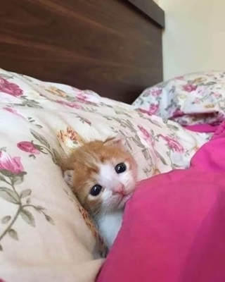
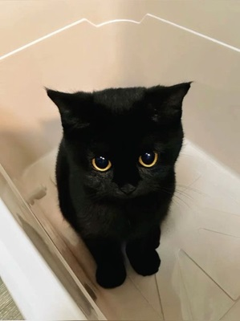
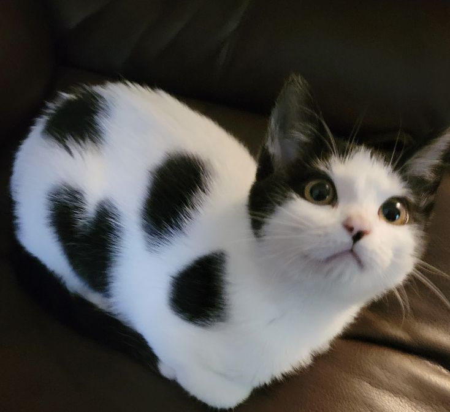

Información sobre los gatos
Los gatos (Felis catus) son mamíferos carnívoros pertenecientes a la familia Felidae. Han convivido con los humanos durante al menos 9,000 años y se consideran una de las especies domésticas más populares del mundo. Originarios de la domesticación del gato salvaje africano (Felis silvestris lybica), los gatos domésticos han desarrollado una relación única con las personas, siendo valorados tanto por su compañía como por su habilidad para controlar plagas.

Características físicas
- Vista: Pueden ver bien con poca luz, lo que los hace expertos cazadores nocturnos.
- Oído: Perciben frecuencias más altas que muchos animales, incluso superiores a las de los perros.
- Bigotes: Les ayudan a medir distancias y detectar cambios en su entorno cercano.

Comportamiento
Son animales territorialistas, curiosos y en general muy independientes. Aunque tienen fama de solitarios, pueden formar lazos estrechos con sus cuidadores y otros animales. Los gatos utilizan posturas corporales, vocalizaciones y marcas olfativas para comunicarse.

Ciclo de vida
Un gato promedio vive entre 12 y 15 años, aunque algunos pueden alcanzar los 20 años o más con cuidados adecuados. Las hembras pueden tener varias camadas al año, con un promedio de 3 a 5 gatitos por camada.

Estos fascinantes felinos son más que simples mascotas: su historia, comportamiento y relación con los humanos los convierten en compañeros únicos.
